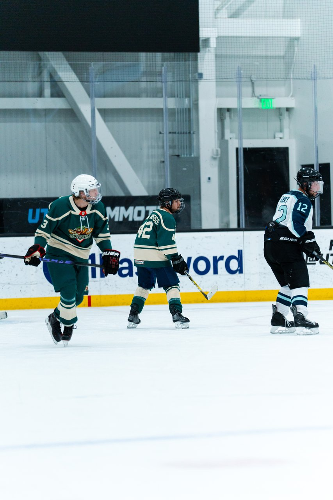
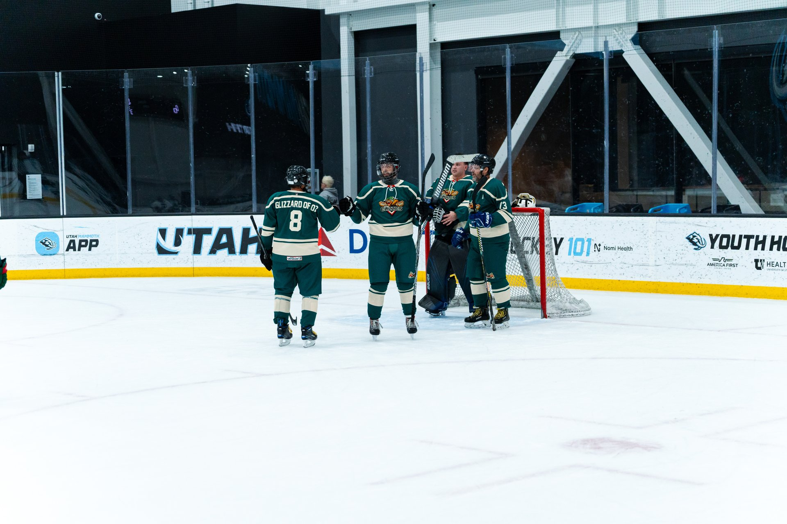

PRESALE🌭 Presale is OPEN — D1 Legends hats, limited time. Lost dogs, come home.Shop Now →
Home / Blog / How to Stop Hockey Gear From Smelling
Gear
How to Stop Your Hockey Gear From Smelling
November 10, 2026 • 5 min read • By Utah Glizzies HC

Your hockey bag smells because it's a warm, damp, sealed box full of sweat. Bacteria love that. Your car knows. Your spouse knows. The fix isn't a magic spray, it's drying. Here's the routine.
The Rule: Dry It Fast, Dry It Completely
Equipment managers and gear shops keep saying the same thing: take everything out of the bag right after the game. Gear that's aired out within about 30 minutes of getting home smells dramatically less than gear left zipped up overnight. That one habit does most of the work.
The Post-Game Routine
Unpack immediately. The bag is not storage. It is transportation.
Open everything up. Pull skate tongues forward, pull out the insoles, and turn gloves inside out so the inner padding can dry.
Add airflow. A box fan and a drying rack beat leaving gear on the floor. A boot and glove dryer is a nice upgrade.
Wash what you can. Base layers, socks and jocks go in the wash after every game. Wash pads and the bag itself now and then.
Store it dry. A damp basement or garage can grow mildew, which is worse than sweat.

Nobody in this photo wants to open the bag. Dry your gear.
Mistakes That Keep the Stink Alive
Relying on sprays. They mask odor briefly; drying and washing fix it.
Machine-drying gloves. It can wreck leather palms. Air-dry them.
Leaving the bag zipped. You are marinating it.
Skipping the skates. Insoles and tongues out, then dry, then sharpen on schedule.